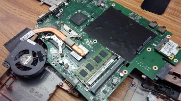

This is the computer before hand and it is running a system check on the cpu and memory.
The computer is running perfectly when we turn it on.
This is the computer before hand and it is running a system check on the cpu and memory.
The computer is running perfectly when we turn it on.
| Intro page | HTML | AI | Kirby | TIC TAC TOE | Calculator | About Me |
This is the computer before hand and it is running a system check on the cpu and memory.
The computer is running perfectly when we turn it on.
The Random-access memory (ram) is a form of computer data storage. Ram allows you to access data whenever you want. To thi day ram is associated with volatile types of memory. When power is lost all the memory on the ram stick is completly lost.
 The motherboard is the circuit board in a computer. It holds the cpu and memory of the computer. The cpu carries instructions of a computer program to operate on the system. Today all cpu's are multiprocessing and have many other process as well.
The hard drive holds all of the memory of the computer. It also holds all the programs downloaded onto the system. Hard drives are becoming smaller and haveing more space to them.
This shows the computer fully apart. You can see all of the diffrent components of the computer.
 After putting it all back together the computer turned on like it was completly new.
Nothing was missing and werid sounds could be heard from it.
After putting it all back together the computer turned on like it was completly new.
Nothing was missing and werid sounds could be heard from it.